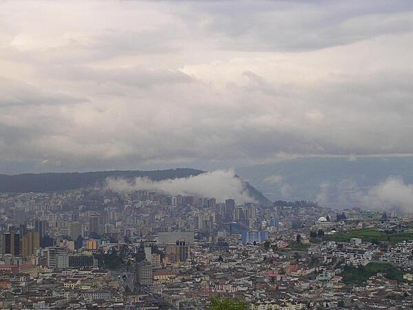

Image courtesy of the CIA World Factbook.
Introduction
Image courtesy of the CIA World Factbook.
The CIA World Factbook provides valuable information about Ecuador. It has been an independent nation since .
What is now Ecuador formed part of the northern Inca Empire until the Spanish conquest in . Quito became a seat of Spanish colonial government in and part of the Viceroyalty of New Granada in . The territories of the Viceroyalty - New Granada (Colombia), Venezuela, and Quito - gained their independence between and and formed a federation known as Gran Colombia.
When Quito withdrew in , the traditional name was changed in favor of the "Republic of the Equator. Between and , Ecuador lost territories in a series of conflicts with its neighbors. A border war with Peru that flared in was resolved in 1999. Although Ecuador marked 30 years of civilian governance in , the period was marred by political instability.
Protests in Quito contributed to the mid-term ouster of three of Ecuador's last four democratically elected presidents. In late , voters approved a new constitution, Ecuador's 20th since gaining independence. Guillermo LASSO was elected president in April becoming the country's first center-right president in nearly two decades when he took office the following month. The current president is Daniel NOBOA elected on . On 8 January 2024, President NOBOA declared a 60-day state of emergency.
Geography
Location
- Western South America, bordering the Pacific Ocean at the Equator, between Colombia and Peru
- 2 00 S, 77 30 W
- Note: Slightly smaller than Nevada
Area
- Total: 283,561 sq km
- Land: 276,841 sq km
- Water: 6,720 sq km
Land Use
- Agricultural land: 29.7% (2018 est.)
- Arable land: 4.7% (2018 est.)
- Permanent crops: 5.6% (2018 est.)
- Permanent pasture: 19.4% (2018 est.)
- Forest: 38.9% (2018 est.)
- Other: 31.4% (2018 est.)
Natural Hazards
- Frequent earthquakes
- Landslides
- Volcanic Activity
- Floods
- Periodic droughts
Government
Capital
- Name: Quito
- Time Difference: UTC-5
- Time Zone Note: Ecuador has two time zones, including (UTC-6)
- Etymology: Named after the Quitu, a Pre-Columbian indigenous people credited with founding the city.
- The name is also a combination of two Tsafiki words: quitso (meaning "center" or "half") + to or tu ("the world").
- The combination roughly translates as "center of the world" and reflects the fact that native peoples recognized that at the two annual equinoxes.
Constitution
How amendments work!
- Amendments can be proposed by the president of the republic through a referendum.
- Amendements can also be proposed by public petition of at least 1% of registered voters.
- Lastly, amendments can be proposed by agreement of at least one-third membership of the National Assembly.
- Passage of amendments requires two separate readings a year apart and approval by at least two-thirds majority vote of the Assembly.
- As well as approval by absolute majority in a referendum.
- Amendments such as changes to the structure of the state, constraints on personal rights and guarantees, or constitutional amendment procedures are not allowed.
Administration Divisions
- 24 Provinces
- Azuay
- Bolivar
- Canar
- Carchi
- Chimborazo
- Cotopaxi
- El Oro
- Esmeraldas
- Galapagos
- Guayas
- Imbabura
- Loja
- Los Rios
- Manabi
- Morona Santiago
- Napo
- Orellana
- Pastaza
- Pichincha
- Santa Elena
- Santo Domingo de los Tsachilas
- Sucumbios
- Tungurahua
- Zamora Chinchipe
People and Society
Ethnic Groups
- Mestizo (mixed Amerindian and White) 71.9%
- Montubio 7.4%
- Amerindian 7%
- White 6.1%
- Afroecuadorian 4.3%
- Mulatto 1.9%
- Black 1%
- Other 0.4%
Languages
- Spanish (Castilian) 93%
- Quechua 4.1%
- Other indigenous 0.7%
- Foreign 2.2%
Religions
- Roman Catholic 68.8%
- Evangelical 15.4%
- Adventist 1.2%
- Jehovah's Witness 1%
- Other 1.3%
- Agnostic or atheist 1.4%
- None 10.1%
- Don't know/no response 1%